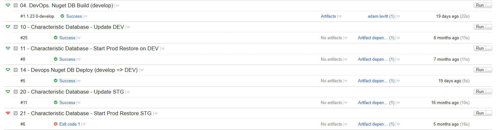
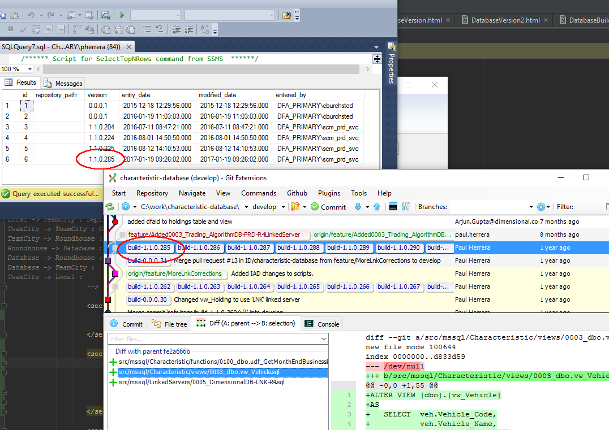

Database Build Process
Definitions
CI == Continuous Integration
GIT == Source Control (Distributed)
Stash
== Bit Bucket Server
== Web Application Integrates w/ GIT
Artifacts
One ore more files that make up a deployable system.
Centralized vs Sandbox
Database Development
Centralized

Sandbox

Sandbox database does NOT have a copy of all the data!
Components
- Sandbox
- Source Control / Continuous Integration
- Automated Deployment
Sandbox
Sandbox => Local Machine
Tools
- Powershell
- Psake
- SQL Express
- Roundhouse

Powershell Build Scripts
Source Control & CI
Use a feature branch to develop a single deployable unit of work.

Submit pull request once feature branch is ready for deployment.

Automated Deployment

Team City Deployment
Deployment Log
Only Method of Database Change Deployment
Even for ECMs
Database Version Tables

What changed?
Limitations
Build Process Limits
- Large Number of External Dependencies
- Hard to Test Replicated Databases
- Mismatching Environments == Side Effects
Roundhouse does NOT support rollbacks.
Use DB Deploy instead.
Automated Restore Limits
- Will not work for DBs over 60GBs.
Source Control for Databases
- By Object
- By Transition